HAM FAIR 2007
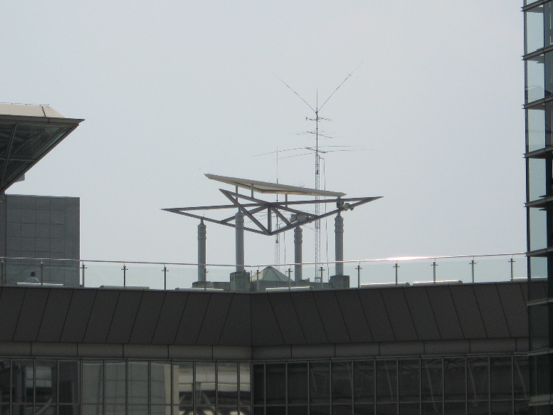
2007年 ハムフェア in 東京ビッグサイト
|
◎ Ham Fair 2007 開催 "ハムフェア2007"が8月25日(土)、26日(日)の両日、東京有明の東京ビッグサイト・西2ホールで開催された。 今年のキャッチフレーズは「あなたも帰りはモールス仲間」。 アマチュア無線の間で愛好者の多いモールス電信(CW)に関する各種の展示や催事をはじめ、無線に関する最新情報をPRし、 多くの方にアマチュア無線に対する知識や理解を深めてもらう事を目的に開催された。 今回のハムフェア会場では、新しい通信方式として実用化されてきた"D-STAR"や"WiRES"などのデモが注目を集めていた。 今年の来場者は例年よりも多かったこともあり、初日の土曜日は午前10時の開場後、30分以上経っても長蛇の列が続き、 手際の悪さに不満の"怒声"も聞かれた。JARL発表によると今年の来場者は2日間で延べ30,000人だった。 |
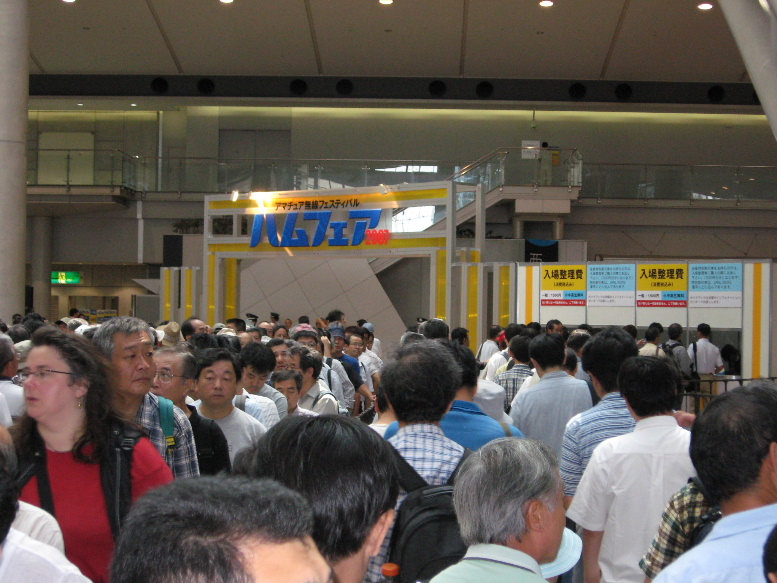
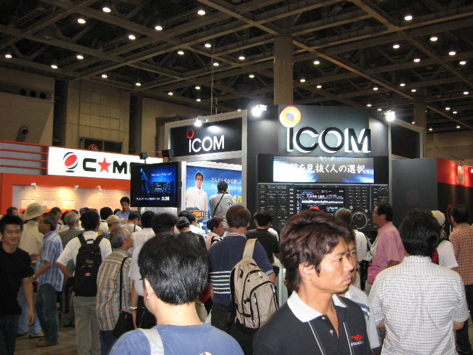
初日に詰め掛けた入場者の長蛇の列が幾重にも続いた/混雑する入り口付近
|
今年もJARLコーナーにはARRL(アメリカのアマチュア無線連盟)のDXCC申請受付デスクが設けられ、
ARRLからW3IZ(ノーム・フサロ氏)が来日、JARLのフィールドチェッカーと供にフィールドチェックが行われた。
これに先立ちフィールドチェックは23日(木)、24日(金)(10:00-15:00)の両日に今年の"DXCC・フィールドチェック"は、昨年までの巣鴨駅前のJARL事務局から、
巣鴨の"お地蔵さん通り"の「JARDハム教室」(共同計画ビル・8階)に場所を移して行われた。 |

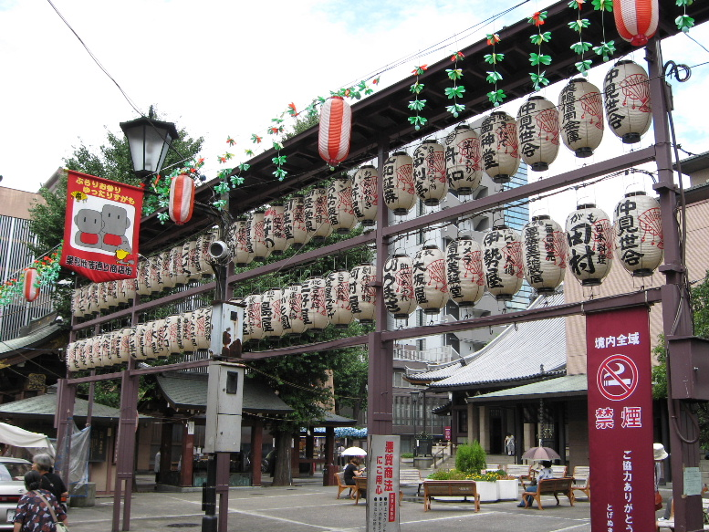
今年は巣鴨"とげぬき地蔵"の隣のビル「JARDハム教室」で行われた"DXCC・フィールドチェック"
("提灯"の後ろに見える青色のビルがJARDハム教室のある共同計画ビル)
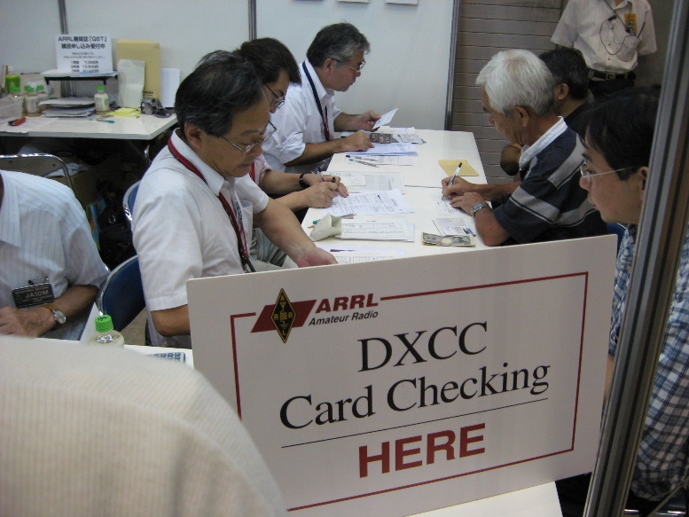
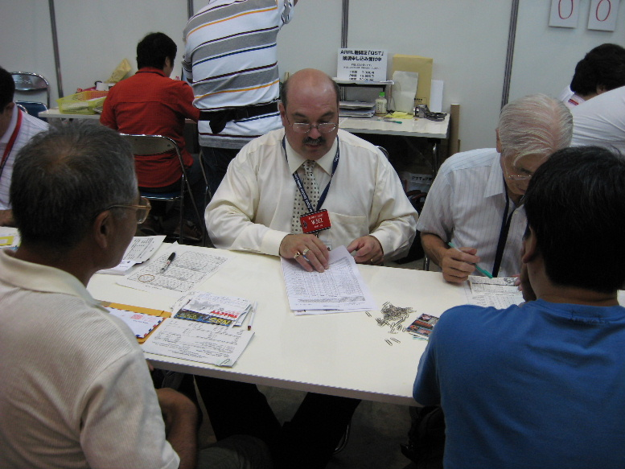
開場でのフィールドチェックの模様。右の写真中央はARRLのW3IZ(ノーム・フサロ氏)
|
大手の無線機器メーカーの各コーナーでは、バーテックススタンダード(YAESU)社は多彩な新機能を搭載してFTDX-9000の血統を継いだ最新鋭機のFT-2000や、
本格派コンパクトHFトランシーバーとして話題になったFT-450、防塵、防水仕様のバイク用モービル機FTM-10Sなどが注目を集めていた。 I-COMは同社の最高機種のIC-7800に続く、新製品のIC-7700に注目が集まった。 これら国産機に混じって、マニアの人気を集めていたのは、今年の米国のデイトンのハムベンションでも最も注目の的となった、 米国・ELECRAFT社製のHF-6mの高性能トランシーバー"K3"の展示だった。 K1、K2などのキットでも有名なELECRAFT社製の新製品の"K3"の完成品は今回が日本での初お披露目だった。 同社の社長であるEric・Swartz(WA6HHQ)ご夫婦が来日、社長自ら製品の説明を引き受けていた。 この製品はエレクトロデザイン(EDC)社で輸入・販売される。 |
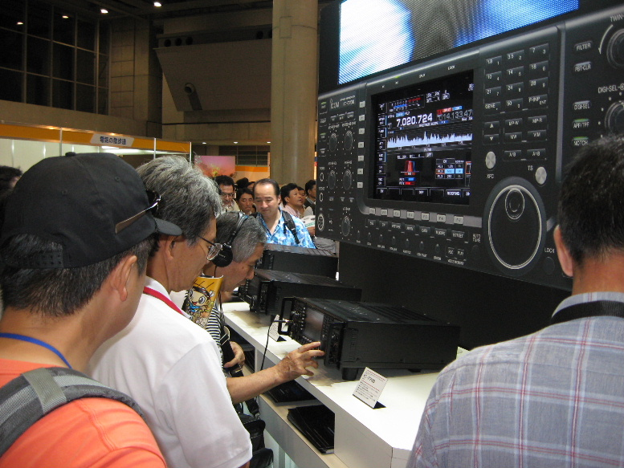
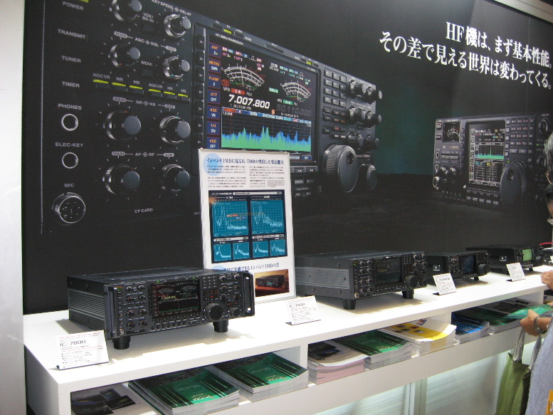
I-COMのブースはIC-7800/IC-7700がメイン
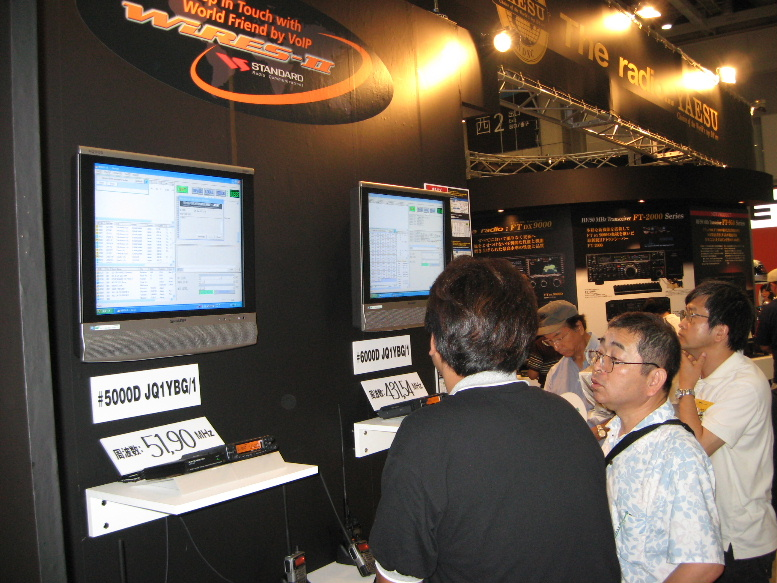
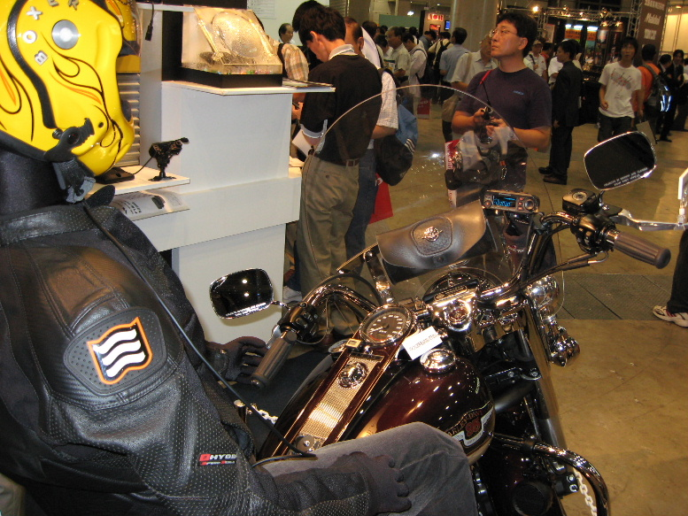
バーテックスタンダードは今年もワイアーズをPR/バイク用モービル機FTM-10Sのデモ

日本初登場で注目を集めたELECRAFT社製の新製品・"K3"
HF～50MHzを10/50/100Wの3つのモデルでカバー
8J1A
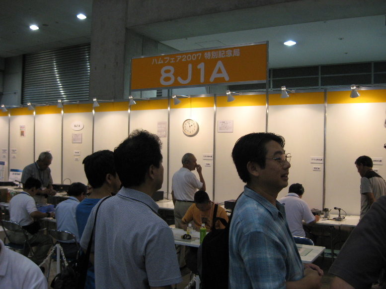
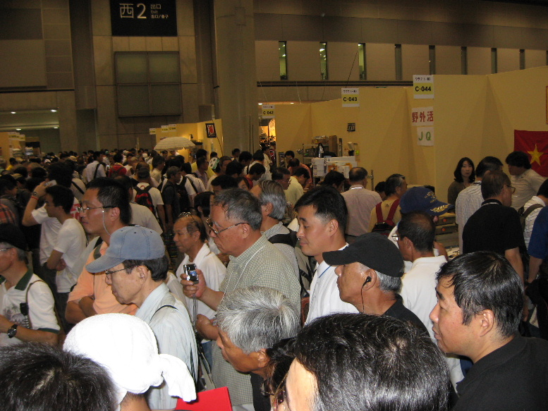
ハムフェア記念局・8J1A/混雑する会場内
Event corner
◎ ハムフェア2007・プログラム
8/25(土) 11:00 「がんばってます！！ 我ら平成生まれハム！！」(平成生まれのハムの皆さん) 12:00 "Project BIG-DISH" アマチュアの壮大な夢を追って・8N1EME報告 (Project BIG-DISH代表=JH1KRC・渡辺美千明氏/事務局=JM1GSH・根本浩次氏) 13:00 「始めよう！モールス通信」(A1クラブ) 14:00 JAIAタイム・「無線クイズとじゃんけんぽんゲーム パートⅠ」(JAIA技術委員会) 15:00 表彰式・オールアジアDXコンテスト・自作品コンテスト、絵画コンクール(総務省・JARL) 8/26(日) 11:00 「D-STARを始めよう」(日本D-STAR・ユーザー会) 12:00 「これまでのARISSスクールコンタクトを振り返って～更なる飛躍に向けて～」(7M3TIZ・安田聖氏) 13:00 「アマチュア無線活動とLoTW」(ARRL=W3IZ・ノーム・フサロ氏) 14:00 JAIAタイム 「無線クイズとじゃんけんぽんゲーム パートⅡ」(JAIA普及推進委員会) 15:00 表彰式・関東UHFコンテスト(JARL関東地方本部) |
Ham Fair 2007
Ham Fair 2006
Ham Fair 2005
Ham Fair 2004
Ham Fair 2003
Ham Fair 2002
Ham Fair 2001
Ham Fair 2000
Ham Fair 1999
|
[ハムフェアの歴史] ハム・フェアの前身「第1回全日本ハムベンション」が1975年(昭和50年)、静岡県富士宮市で開催された。 会場は富士の裾野に広がる朝霧高原のグリンパーク。 1976年の第2回では特別記念局の8J2HAMも開局、交通の便は良くないものの自然を満喫出来る会場は多くの来場者で賑わった。 この実績を基礎に、1977年(昭和52年)「全日本ハムベンション」を引き継ぐ形で「第1回アマチュア無線フェスティバル」(ハムフェア)が、 JARLの主催で東京都中央区晴海の東京貿易センターで開催される事になった。 第1回は9月23日から25日までの開催期間にも関わらず、初日から多くの入場者がつめかけた。 フェスティバルの特別記念局・8J1HAMも開設、多くの来場者が運用した。 |